Nicole : - Bonjour, Antoine ! Entre, s'il te plaît. Tu as été à la campagne 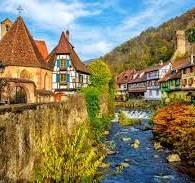 , n'est-ce pas ?
Antoine : - Oui, dans un joli village d’Alsace 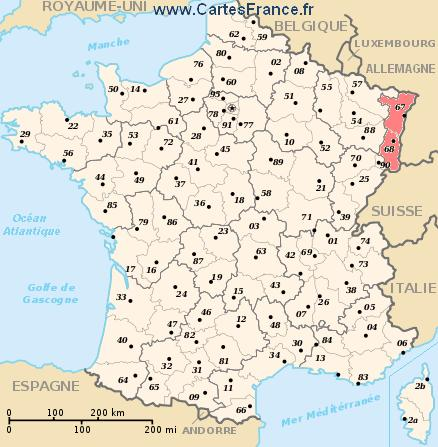 , avec ma famille. Nous avons visité une ferme. Regarde les bâtiments pour les animaux : il y a des vaches 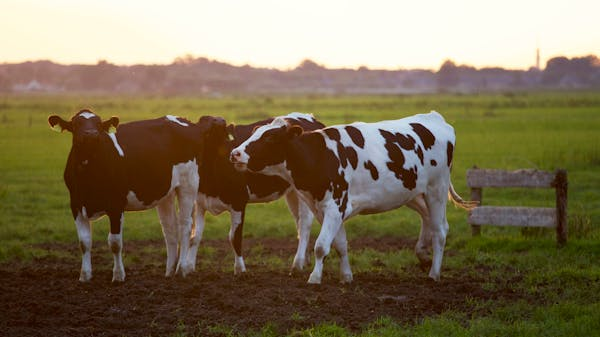 , des cochons
 , des chevaux 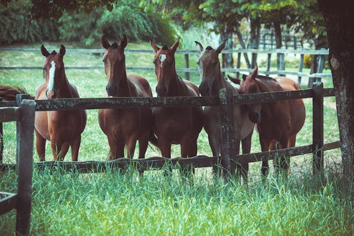
. Nous avons admiré des paysages magnifiques, mais ce qui m’a impressionné le plus, c'étaient les maisons à colombages 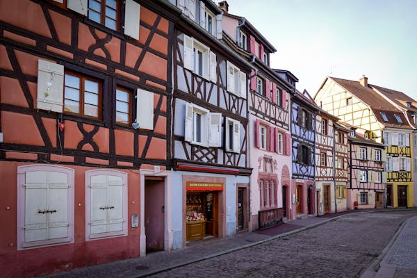
de cette région.
, des chevaux 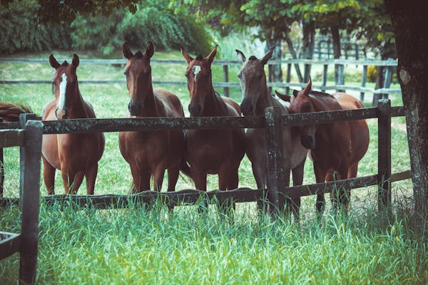
. Nous avons admiré des paysages magnifiques, mais ce qui m’a impressionné le plus, c'étaient les maisons à colombages 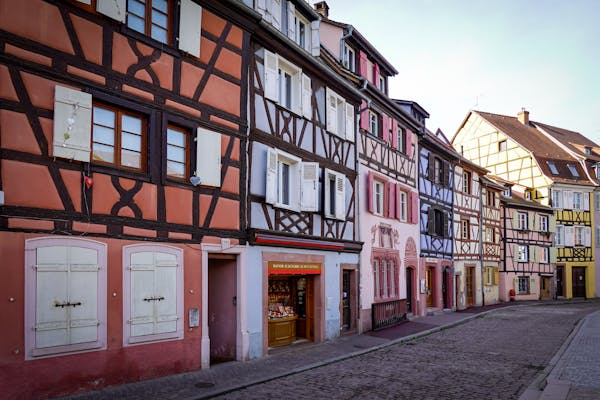
de cette région.Nicole : - Fais voir ! Il est vrai qu'elles sont superbes ! Tu as goûté aussi aux spécialités de la région ?
Antoine : - Ah, oui, bien sûr. De la choucroute 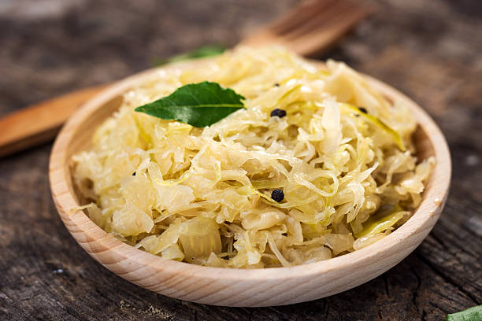 , du pain d'épices 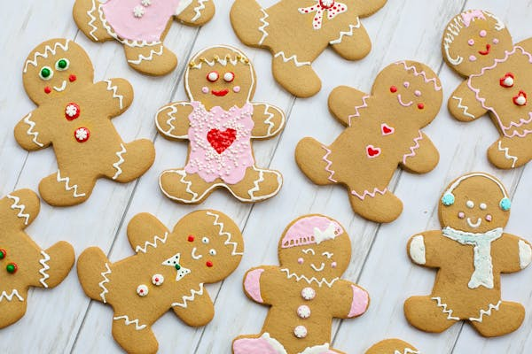 et du kouglof 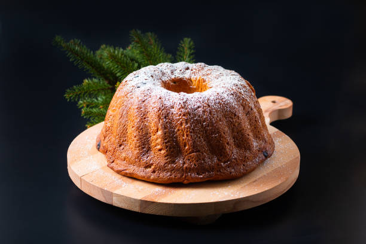 , un dessert délicieux. Et toi, tes vacances, ça s'est bien passé ?
Nicole : - Moi, je suis allée en colonie de vacances au sud de la France, en Provence 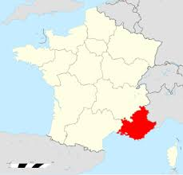 .
Antoine : - Tu as des photos, toi aussi ?
Nicole : - Ah, oui, sur mon portable. Voilà l'hôtel, à Marseille. Et ici, on est à la plage. On a pris des bains de soleil, on a nagé, on a fait de la voile 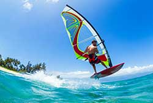 et du ski nautique.
Antoine : - Oh, tu es bien courageuse ! Ici vous êtes en ville ?
Nicole : - Oui, nous nous sommes promenés, nous avons vu quelques monuments, le Vieux port 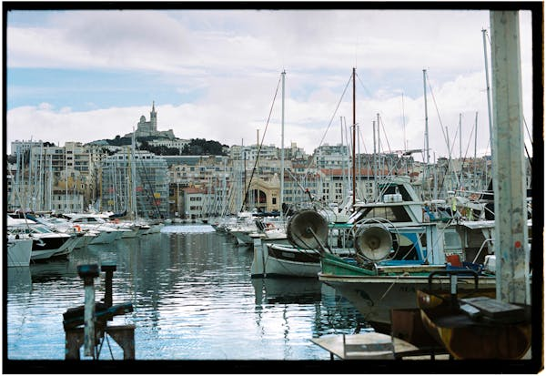 . Il est super, n’est-ce pas ?
Antoine : - Ah, oui, toi aussi, tu as passé de belles vacances.
Nicole : - Et ce n’est pas tout ! Un jour nous avons fait un tour aux environs et nous avons admiré les champs de lavande 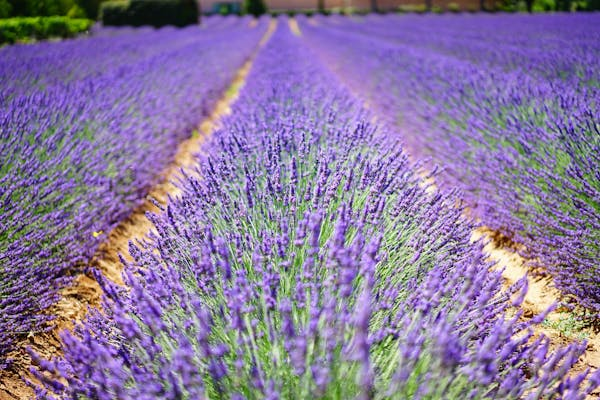 ! Ça te plaît ?
Antoine : - Bien sûr.
Nicole : - Il faut faire un petit album avec les plus belles photos.
Antoine : - Bonne idée !